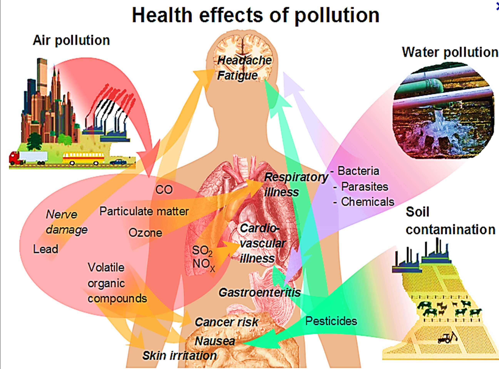
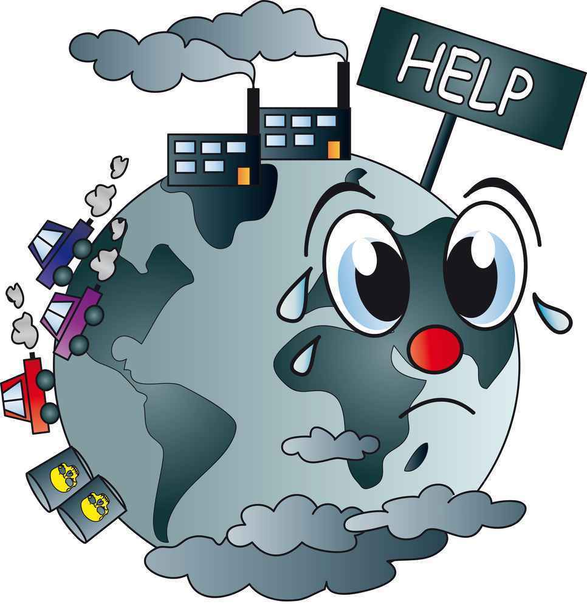
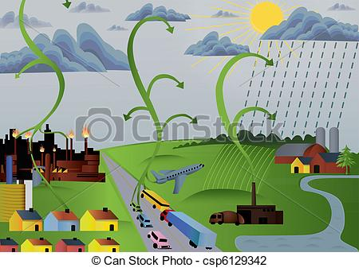
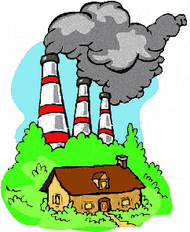
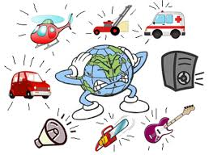

Air pollution is one of the most important environmental problems.At the same time, it is a complex problem posing multuple challenges in term of manangement and migation of harmful pollutants.Air pollutants are emitted from anthropogenic and natural sources; they may be either emitted directly or formed in the atmosphere.They have a number of impacts on health , ecosystem , the built environmemt and the climate ; they may be transported or formed over long distances ; and they may affect large areas.
Around 6.5 millions daeths are attributed each year to poor air quality , making this the world's fourth-largest threat to human health , behind high blood pressure , dietary risks ang smoking.
- Human Health
- Air pollution is the single largest environmental health risk.Heart diseases and stroke are the most common reasons for permature death attributable to air pollution and are responsible for 80% of causes of permature death;lung diseases and lung cancer.
Emerging literature shows that air pollution has been associated with health impacts on fertillity, pregnancy , and new-borns and children.These include negative effects on neural development and cognitive capacities , which in turn can affect performance at school and later in life , leading to lower productivity and quality of life.
While air pollution is harmful to all populations, some people suffer more because they live in polluted areas and are exposed to higher levels of airpollution, or they are more vulnerable to the health problems caused by air pollution.
Respiratory and Lung diseases including__
- Asthma attacks
- Chronic Obstructive Pulmonary Disease-(COPD)
- Reduced lung function
- Pulmonary Cancer-caused by a series of carcinogen chemicals that enter the body through inhalation.
- Mesothelioma-a particular type of lung cancer , usually associated with exposure to asbestos.
- Pneumonia
|
 |
|  |
- Ecosystem
- Air pollution has several important envrronmental impacts and may directly affect vegetation, as well as the quality of water and soil and the ecosystem services that they support.For example ,ground level ozone(O2) damages argricultural crops , forests and plants by reducing their growth rates.
|
- Climate Change
- Air Pollution and Climate Change are interwined.Several air pollutants are also climate forcers , which have a potential impact on climate and global warming in the short term(i.e decades).In addition, changes in weather patterns due to climate change may change the transport, dispersion , deposition , and formation of air pollutants in the atmosphere.For example ,a warmer climate leads to an increase in ground-level O2 production and increased O2 levels than contribute to more warming.
|
 |
|  |
- The built environment and cultural heritage
- Air pollution can also damage materials and buildings.The impact of air pollution on cultural heritage materials is a serious concern because it can lead to the loss of parts of our history and culture.Damage includes corrosion , biogegradation and soiling.Emission of air pollutants can be deposited and build up over the years on the surfaces of buildings.
|
- Economic Impacts
- The effects of air pollution on health, crops and forests yields , ecosystems , the climate and the built environmental also entall considerable market and non-market costs.The market costs of air pollution include reduced labour productivity , additional health expenditure ,and crop and forest yield losses.The potential total economic consequences of both market and non-market impacts of amblent air pollution are very significant and underscore the need for strong policy action.
|
 |
 "Air Pollution"
"Air Pollution"{kind=link}
{kind=link}
{kind=link}